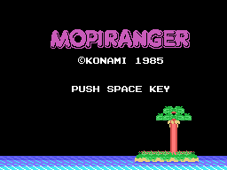
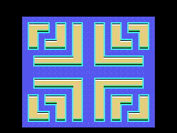

The game
Mopi Ranger is a 1985 maze game. You work through closed zones picking up what is in them, dodging the enemies, with a hammer you throw in a straight line.

The wordmark, drawn from the ROM. It is not a single piece of artwork: it is three rows of twenty cells with consecutive patterns from 0xC0 on.
Fifty zones, twenty-five maps
The scoreboard counts up to fifty zones. Distinct drawings number twenty-five: on reaching 25 the game subtracts 25 from the index and starts over from the first map, with different enemies and objects.
And of those twenty-five, one in five is a bonus stage, and all five share the same screen.

The first zone. Each of the map's 120 bytes is a 2x2 block of cells; twelve across by ten down.
How it plays
- You move in four directions, square by square. Turning ninety degrees requires being centred on a square; a U-turn can be made at any time.
- The button throws the hammer, which flies straight until it meets something. If it reaches an enemy, it kills it: one hundred points.
- Some blocks can be pushed, if there is room on the far side and nobody standing there.
- Each zone has a clock. When it runs low the scoreboard warning flashes and the scenery starts moving at twice the speed.
The enemies
Five types, and no two behave alike:
| type | what it does |
|---|---|
| 1 | cuts you off: goes where you will be, not where you are |
| 2 | mirrors you: copies the direction you press, horizontal axis flipped |
| 3 | heads for your mirror point, so it prowls instead of following |
| 4 | like type 1, with a shorter lead |
| 5 | the big one: goes for the objects and eats them |
The big one deserves its own paragraph. It does not cost you a life: it costs you the zone. When it stands on an object it wipes it off the board and puts back whatever was underneath, exactly as if you had picked it up yourself. It is also the only one allowed to step on the goal squares.
And there is a nice touch: when an enemy goes down, the others find out. A table says, for each one, which three are its neighbours, and those get turned around.
The bonus stages

The bonus stage, the same one for all five zones that use it.
Clearing it whole gives the PERFECT BONUS. And hidden in it is the house prize: standing on the exact square X=0x90, Y=0x39, the game prints KONAMI 5730 PTS and awards those 5730 points.
The number is no accident. Japanese numbers can be read by their sound: 5 = go, 7 = na, 3 = mi, that is go-na-mi. Konami put that prize in many of its games.
The scoreboard
Six BCD digits, capped at 999999. The high score survives as long as the machine stays on. Each object is worth an amount that tracks the animation clock, and the end-of-stage prize is twenty thousand points, added in three goes because the adder works in decimal and cannot take it in one.
What you watch but do not touch
The attract mode that runs when nobody is playing is not AI: it is 77 recorded keypresses fed in where the joystick input would go. That is covered in Findings.